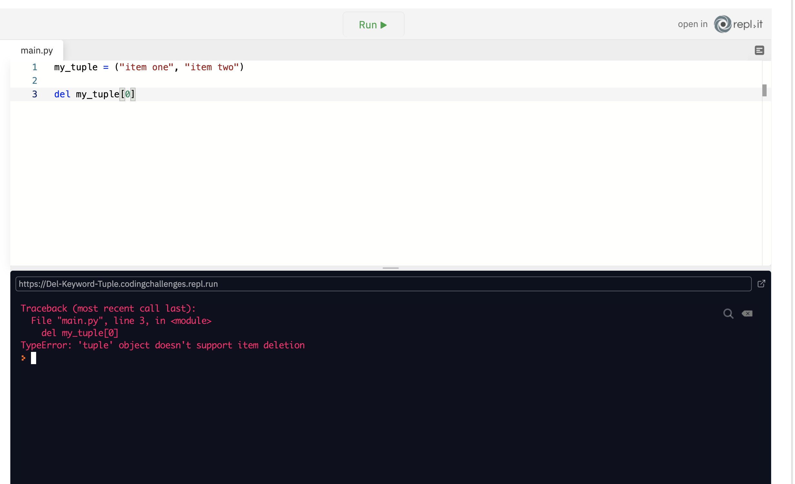
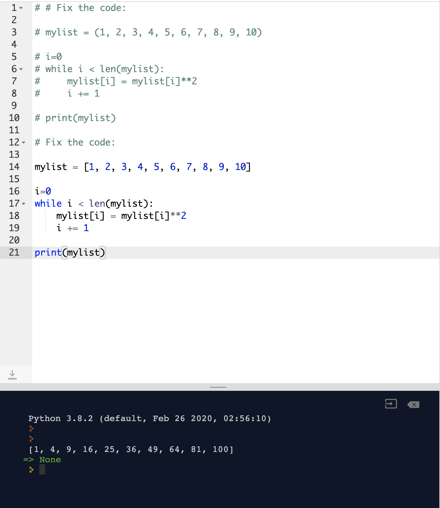

Notes page 6
Slice Notation
Allows us to create sub-lists from lists
Sometimes we may only need a subset of a list, instead of a full list. In this case, we would use slice notation to chop up the list
Lists are a great way of storing a collection of variables and objects, but what if you want to have more than just have a collection of strings? What if you wanted a list of lists? We can also create dictionaries and tuples. We can also create lists and dictionaries dynamically in a single line of code using list and dictionary comprehensions, respectively. And we’ll take a look at how to access values stored in each of the different types of collections and how to work with them with looping constructs. We can slice up lists to get subsets of a list. For example, if we wanted to get the first two items in a list, then we would do the following:

Here we’ve added [0:2] to the end of our list which is called slice notation. It works like a combination of indexing and range. First, we indicate the index at which we wish to start. Then after the colon (:), we use the index at which we want to stop. Similar to the range function, the stop value is the everything up to, but not including, that value. Here it will, therefore, include everything up to index 2, except for index two itself. If we wanted to start at the very beginning of a list, we could just say [:2].
Similarly, if we set a start value and don’t specify a stop value, it will just get everything all the way up to the end of the list.
And if we don’t provide a start or stop value, then it will just grab everything from the beginning, all the way to the end.

We would do this if we wanted to create a copy of a list.
In addition to the start: stop values, we also have step. Again, this works in the same way as the range function.
Now we start at 0, stop at 4, and get there by stepping in 2s. If we wanted to reverse our list, for example, we would just do the following:
fruits = ["apple", "banana", "peach", "pear", "plum", "orange"] print(fruits[::-1])
Provide us with another means of storing collections of data
Sometimes a list doesn’t accurately fulfil our needs; in which case, we would use tuples instead
A tuple is denoted by the parentheses (). And the information contained within are the values of that tuple. NOTE: Tuples are not to be confused with function parameters or arguments.
We can get values from tuples in the same way that we extract data from lists using indexes.
So, if tuples work in pretty much the same way as lists, then why use them at all? When working with collections, one of the main reasons to use a list would be if you are storing pieces of information about many different things, and you would use tuples for storing different aspects of a single thing. For example, we might want to use a list to store a list of usernames:
Another big difference between lists and tuples is that lists are mutable, whereas tuples are immutable.
A mutable object can be changed after it's created, and an immutable object can't. That said, if you're defining your own class, you can make its objects immutable by making all fields final and private. Strings can be mutable or immutable depending on the language.
Allows creation of data structures that can be modified, as well as others that cannot be changed
For data that can be modified and updated; or are static values that will always remain the same
So what’s the difference between something that’s mutable and something that’s immutable? Something that’s mutable is something that can be changed. Lists, for example, are mutable. Mutable means that it can be mutated and immutable implies that it cannot be mutated. Lists are likely to grow and change over time, and we can achieve this by using the .append() method. In the example below, we’ve added strawberry to our list of fruits using .append().
Then when we print out the list, we can see that our list now contains strawberry.
What if we wanted to ensure that our list is sorted alphabetically. Well, in that case, we’d just use the .sort() method.
Here we’ve deleted the first element from the fruits list, so it no longer contains apple.
Tuples, however, are not mutable, meaning that they cannot be changed or modified and have a fixed size and fixed values. Therefore if we create a tuple containing two items, then it will always have two items. It cannot be changed. If we wanted to use the del keyword on an item in a tuple, then Python will complain.
Now Python is telling us that the ‘tuple’ object doesn’t support item deletion because a tuple is immutable and cannot be changed.
In this respect, strings are much more like tuples in Python, but in most programming languages, strings as immutable descendants of some list. But it is much easier to think of strings as a list of characters.
In the last set of challenges you practiced some common operations on lists and tuples, namely indexing them and extracting subsets from them using slicing. In this respect, lists and tuples might have seemed almost identical, but they're not. As you might recall learning in the Mutability and Immutability lesson, lists are mutable (meaning they can be changed), and tuples are immutable (meaning they cannot be changed). In the code window, we've created a list of the numbers 1-10. We were attempting to take this list of numbers, loop through it with a while statement and change every number to its square, then print the list of the numbers' squares. Unfortunately we've made a mistake in our code and Python is returning an error when we click the run button.
Your challenge is to: Fix the error and ensure that the print() function on line 10 prints the list of the squares of the numbers 1-10
solution: as tuples are immutable they cant be changed, so we need to change from brackets to square brackets in order to change from tuple to list.
Provides with a means of storing data in a more meaningful way
Sometimes we need a more structured way of storing our information in a collection. To do this, we use dictionaries
Dictionaries allow us to take things a step further when it comes to storing information in a collection. Dictionaries will enable us to use what are called key/value pairs. When using a dictionary, we define our key/value pairs enclosed in curly braces ({}). After that, we use a string as our key or any other immutable data type. Then we use a colon to separate the key from the value, and then we have the value.
think JSON data, basically look the same, think MS2 i used this alot, JSON key value pairs and dictionaries... different names same idea.
In this case, we have a dictionary called user. This dictionary has four keys (username, first_name, last_name, and age). Each of these keys has a value associated with it (“tombombadil”, “Tom”, “Bombadil”, 100).
If we wish to access the values contained within the dictionary, we use a similar syntax to indexing in lists and tuples; only we use the string that we use for the key instead of a numeric value. For example, if we wanted to access the user’s age, then we would use the following syntax:
this is really similar how i used jquery to access my JSON data,user["data"]
When working with dictionaries, instead of just getting each element, as we would with a list or tuple, we can get both keys and values from a dictionary. Unfortunately, creating the same kind of for loop that we would use to iterate over a list would just give us each key:
Note: Dictionaries don’t have any order, so the order that the keys get printed in may not match the order in which you defined them. But, what if we want the values associated with each of those keys? Then we’d simply use the square brackets like before.
Now we’re passing the item value into the square brackets. Remember, an item is just a temporary variable that’s used within the scope of the for loop, and on each iteration, it will retrieve the next string that’s used as a key. It will print out the value for each of the key/value pairs contained in the dictionary.
If we needed access to both, keys, and values, we’d have to use a dictionary method called .items().
Now we have defined to new variables in our for loop, key and value. These variables don’t need to be called key and value, but as the first variable will be the key and the second variable will the value, it’s considered to be a good convention. Then after that, we just print out the key and the value, with some nice formatting to denote each key/value with which we’re working.
Dictionaries are like lists, but they have keys to identify the list items. Just like a real dictionary, where the word you're looking up is the key and the definition is the value, dictionaries in Python have keys and values. You can use a Python dictionary just like a real one, looking up the value of a key just as you would look up the definition of a word. One of the most common uses for dictionaries in Python is to store information about users on a website. In the code window we've written a small function, user_profile(), which currently returns nothing. Your challenge is to: Inside the function, define a dictionary, user_info, which contains information about a user named Alan. Return the dictionary from the function Requirements: The dictionary must have four keys: first_name, age, location, and date_joined The values for the keys should be Alan (a string), 36 (an integer), USA (a string) and Nov 12, 2016 (a string), respectively The keys and values must have the proper data types and be in the proper order in the dictionary
note: bloody commas, end of the dictionary remmeber to make sure no commas or thing is fucked!